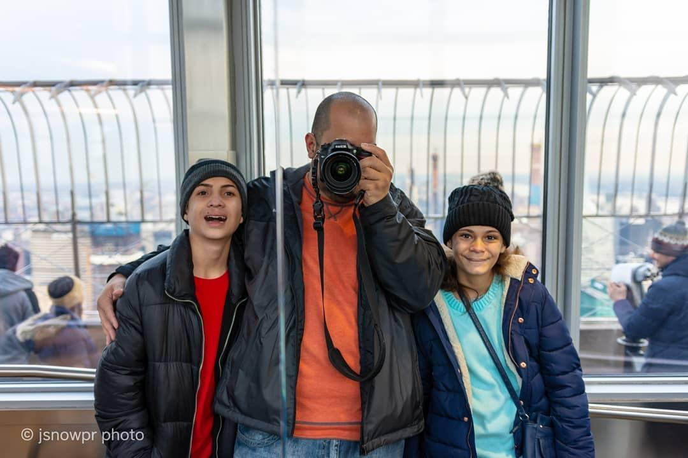

ABOUT
¡Hola! En este recorrido verán una muestra de mi trabajo a través de los años, uno que empezó como hobby y terminó siendo mi mayor expresión y pasión. No fue fácil al principio pero tuve el mejor apoyo jamás, el de mi esposa Betzy, mi inspiración y mejor modelo. Dedicada a su memoria, pues sin ella esto no hubiera sido posible.
Todas las imágenes fueron tomadas con cámara Nikon con lentes Nikkor y Sigma.
¡Espero que la disfruten!